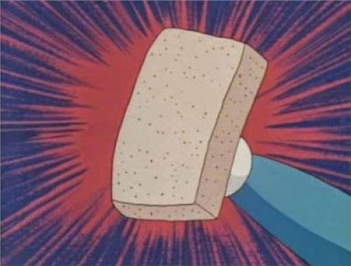

Template
2020 資訊之芽 🌱 C 語法班 by 實習講師 Jason假設今天芽芽請大家寫一個比較數字大小的 Function
一塊小 🍰！
int compare(int a, int b){
if (a > b)
return 1;
else if (a == b)
return 0;
return -1;
}
再假設芽芽又說你的函式也要支援比較 double
哼！又一塊小 🍰！
我還不複製貼上！
Ctrl-C + Ctrl-V !
int compare(double a, double b){
if (a > b)
return 1;
else if (a == b)
return 0;
return -1;
}
再假設芽芽又說你的函式也要支援比較
long long, unsigned int, etc ...
於是你就
Ctrl-C + Ctrl-V
Ctrl-C + Ctrl-V
Ctrl-C + Ctrl-V
Ctrl-C + Ctrl-V
壞份子！Bad！
複製貼上錯了嗎 😢
- 整份程式碼落落長 🧐
- Debug 時要 De 很久 🐛
- 複製幾次就要改幾次 🤯
簡而言之就是毒瘤
🤔
有沒有什麼好方法呢？
大家一起來想想看吧～
既然變動的地方只有型別
那就只要把型別當變數就可以了！
登登登登！
參數多型
Parametric Polymorphism
Wikipedia - Parametric Polymorphism
簡而言之
就是某種讓我們可以把型別參數化的東東
C++ 透過 Template 來提供這種功能
想深究的可以去看範疇論跟函數式編程，但不要來問我因為我不會 😛
怎麼使用 Template 呢？
以剛剛的 compare() 為例
以剛剛的 compare() 為例
template<typename T>
int compare(T a, T b){
if (a > b)
return 1;
else if (a == b)
return 0;
return -1;
}
int main(){
int a = compare<int>(1, 2);
double b = compare<double>(1.618, 3.141);
return 0;
}
回傳型別也可以參數化 😮
template<typename T>
T minimum(T a, T b){
if (a > b)
return b;
return a;
}
int main(){
int a = min<int>(5, 3);
double b = min<double>(1.618, 3.141);
return 0;
}
還可以有多個型別參數 && 連 Struct 都可以用
template<typename T1, typename T2>
struct pair {
T1 first;
T2 second;
}
int main(){
pair<int, double> a;
a.first = 5;
a.second = 10.24;
return 0;
}